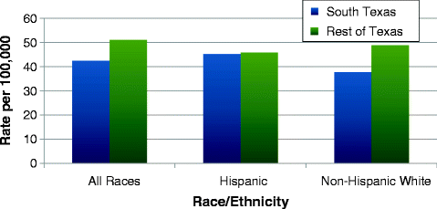

Chronic diseases, such as diabetes, heart disease, stroke, and cancer, are currently the leading causes of both death and disability in the USA. It is estimated that 70 % of all deaths nationwide are due to chronic illnesses (1.7 million deaths each year), and 133 million Americans were living with a chronic disease in 2005. Although chronic diseases are some of the most prevalent and costly health problems in the USA, they are also largely preventable. Healthy behaviors, such as getting enough exercise, eating right, and avoiding tobacco, can help to prevent many chronic diseases [1]. In this chapter, chronic disease mortality rates are presented as age-adjusted rates; prevalence of chronic diseases are presented as crude estimates.
Diabetes
Diabetes is a group of diseases that result from the body’s inability to produce or correctly use insulin, a hormone that regulates sugar metabolism [2, 3]. Type 2 diabetes is the most common form of diabetes, accounting for 90–95 % of all diagnosed cases. Type 2 diabetes usually results from insulin resistance, a disorder in which the body does not properly use insulin, as well as problems with insulin production [3]. Diabetes is associated with numerous serious health complications such as cardiovascular disease, blindness, kidney failure, nervous system damage, and amputations [2, 3]. African-Americans, Hispanics, Native Americans, and Asian Americans are at higher risk for Type 2 diabetes than are non-Hispanic whites [2]. Risk factors for Type 2 diabetes include overweight and obesity, physical inactivity, a history of gestational diabetes, and a family history of diabetes [2, 3].
Diabetes Prevalence
An estimated 8.3 % (or 25.8 million people) of the US population had diabetes in 2010. If trends continue, an estimated one in three US adults will have diabetes by 2050 [2]. In Texas, approximately 1.7 million adults (aged 18 or older) were living with diagnosed diabetes in 2009 [4]. Type 2 diabetes, which accounts for the large majority of diabetes cases, is usually associated with older age [2]. Approximately 1.9 million new cases of diabetes were diagnosed in people aged 20 or older in 2010 [2].
Diabetes Prevalence in South Texas
An estimated 11.6 % of adults who live in South Texas have been diagnosed with diabetes. The percent of adults with diabetes in South Texas was higher than the estimated percent with diabetes in the rest of Texas (9.3 %) and national BRFSS 2007–2010 estimates (8.9 %). Hispanics in South Texas had a higher prevalence of diabetes than did Hispanics in the rest of Texas. Hispanics also had a significantly higher prevalence of diabetes than non-Hispanic whites in South Texas (Fig. 7.1).
Fig. 7.1
Estimated percent of the adult population with diabetes by location and race/ethnicity, 2007–2010. Source: Texas Behavioral Risk Factor Surveillance System Combined Year Dataset, Statewide BRFSS Survey, 2007–2010
Age patterns for diabetes prevalence in South Texas were the same as seen nationwide; the prevalence of diabetes in South Texas increased with age. For those aged 30 or older, the prevalence of diabetes was statistically significantly higher among Hispanics than among non-Hispanic whites. An estimated 34 % of Hispanic adults aged 65 and older in South Texas were diagnosed with diabetes in 2007–2010 (Fig. 7.2).
Fig. 7.2
Estimated percent of the adult South Texas population with diabetes by age group and race/ethnicity, 2007–2010. Source: Texas Behavioral Risk Factor Surveillance System Combined Year Dataset, Statewide BRFSS Survey, 2007–2010
Overall, the prevalence of diabetes was similar among South Texas metropolitan and nonmetropolitan counties (11.4 % and 12.4 %, respectively).
Diabetes Mortality
Nationally, diabetes was the seventh leading cause of death in 2007 [2] and the sixth leading cause of death from 2002 to 2007 in Texas [4]. This ranking was based on death certificates that listed diabetes as the underlying cause of death. Mortality from diabetes is believed to be underreported; it is listed as a contributing factor more often than it is listed as an underlying factor, and diabetes is often not listed at all on the death certificate. In 2007, including diabetes as an underlying cause of death and a contributing factor, there were 231,404 deaths due to diabetes in the USA [5].
Diabetes Mortality in South Texas
The 2005–2009 age-adjusted diabetes mortality rate in South Texas (with diabetes reported either as an underlying or contributing cause of death) was 170.9 deaths per 100,000 persons. This rate was significantly higher than the age-adjusted diabetes mortality rate in the rest of Texas (82.1/100,000). Hispanics had a higher diabetes mortality rate than non-Hispanic whites, both in South Texas and the rest of Texas. The age-adjusted diabetes mortality rate for Hispanics in South Texas (219.6/100,000) was twice as high as the rate for Hispanics in the rest of Texas (108.92/100,000), and non-Hispanic whites in South Texas also had a higher age-adjusted diabetes mortality rate than did non-Hispanic whites in the rest of Texas (Fig. 7.3).
Fig. 7.3
Age-adjusted mortality rates for diabetes as an underlying or contributing cause, by location and race/ethnicity, 2005–2009. Source: Center for Health Statistics Data Management Team, Texas Department of State Health Services
As with diabetes prevalence, the diabetes mortality rate in South Texas increased with age, and diabetes mortality rates were higher for Hispanics than for non-Hispanic whites among those aged 35 and older. South Texas Hispanics aged 75 or older had a diabetes mortality rate of 1,981.5/100,000 (Fig. 7.4).
Fig. 7.4
South Texas age-adjusted mortality rates for diabetes as an underlying or contributing cause, by age group and race/ethnicity, 2005–2009. Source: Center for Health Statistics Data Management Team, Texas Department of State Health Services
In South Texas, males had a higher diabetes mortality rate (189.4/100,000) than females (155.6/100,000). Residents of South Texas metropolitan counties had a higher diabetes mortality rate (173.1/100,000) than did residents of nonmetropolitan counties (159.2/100,000).
Bexar County and Webb County both had higher diabetes mortality rates than South Texas, whereas the Lower Rio Grande Valley region had a lower mortality rate than South Texas (Fig. 7.5).
Fig. 7.5
Age-adjusted mortality rates for diabetes as an underlying or contributing cause in selected South Texas locations, 2005–2009. Source: Center for Health Statistics Data Management Team, Texas Department of State Health Services
Cardiovascular Disease
Cardiovascular disease (CVD) is a general term given to any disease affecting the heart or blood vessels. CVD is the leading cause of death in the USA [6]. The American Heart Association estimated that 82.6 million Americans (more than one in three) were living with one or more forms of CVD in 2008. About 32.8 % of all deaths in the USA (811,940) were attributable to CVD in 2008 [7]. Heart disease and cerebrovascular disease (stroke) are the two main causes of CVD death [6].
Heart Disease Mortality
Heart disease is the leading cause of death in the USA, accounting for 25 % of all US deaths in 2008 [6]. It is the leading cause of death for both US men and women, as well as the leading cause of death for African-Americans, Hispanics, and Whites [8]. In the USA in 2007–2009, African-American adults had the highest age-adjusted heart disease death rate (239.9/100,000), followed by whites (182.9/100,000) and Hispanics (128.6/100,000) [9]. Coronary heart disease, which can lead to heart attacks, is the most common form of heart disease in the USA; however, several other heart conditions also fall under the term heart disease [8].
The risk of heart disease, and subsequently heart disease mortality, increases with age. Approximately 82 % of coronary heart disease deaths occur among those aged 65 or older. Men have a greater risk of heart disease than women, especially at younger ages [10]. Major risk factors for heart disease include high blood pressure, high blood cholesterol levels, cigarette smoking, and diabetes [8, 10]. About 65 % of diabetics die of some form of heart or blood vessel disease [10, 11]. In addition, poor diet and physical inactivity have been linked to heart disease, probably because they are related to the major risk factors listed above. Similarly, obesity is an indirect risk factor for heart disease, because it is linked to high cholesterol, high blood pressure, and diabetes [8, 10].
Heart Disease Mortality in South Texas
Overall, South Texas had a lower age-adjusted heart disease mortality rate (187.9/100,000) than did the rest of Texas (204.1/100,000). Although non-Hispanic whites in South Texas had a lower heart disease mortality rate than non-Hispanic whites in the rest of Texas, the opposite was seen for Hispanics (Fig. 7.6). South Texas Hispanics had a higher mortality rate than Hispanics in the rest of Texas. Unlike in the rest of Texas and nation, where Hispanics die less frequently from heart disease than non-Hispanic whites, Hispanics in South Texas had a slightly higher heart disease mortality rate than their non-Hispanic white counterparts (Fig. 7.6).
Fig. 7.6
Heart disease mortality rates in South Texas and the rest of Texas by race/ethnicity, 2005–2009. Source: Center for Health Statistics Data Management Team, Texas Department of State Health Services
Gender and age patterns for heart disease mortality in South Texas were the same as seen nationwide. For all races combined, nonmetropolitan counties in South Texas had a higher age-adjusted heart disease mortality rate than did metropolitan counties (Fig. 7.7). Hispanics in nonmetropolitan counties also had a higher heart disease mortality rate (220.5/100,000) than did Hispanics in metropolitan counties (190.2/100,000), and this difference in rates was larger than for all races combined. On the other hand, the mortality rate among non-Hispanic whites was only slightly and not statistically significantly higher in nonmetropolitan counties than in metropolitan counties (Fig. 7.7).
Fig. 7.7
Heart disease mortality rates in South Texas, by county designation and race/ethnicity, 2005–2009. Source: Center for Health Statistics Data Management Team, Department of State Health Services
The average annual age-adjusted heart disease mortality rates for Bexar County (183.0/100,000) and the Lower Rio Grande Valley area (182.9/100,000) were both similar to the mortality rate for South Texas as a whole (187.9/100,000). However, Webb County’s heart disease mortality rate (209.4/100,000) was higher than the overall South Texas rate (Fig. 7.8).
Fig. 7.8
Heart disease mortality rates in selected South Texas locations, 2005–2009. Source: Center for Health Statistics Data Management Team, Texas Department of State Health Services
Cerebrovascular Disease Mortality
Cerebrovascular disease, more commonly known as stroke, is the fourth leading cause of death in the USA [6, 12]. A stroke is characterized by neurological damage that occurs either when the brain’s blood supply is blocked or when a blood vessel in the brain bursts [13]. About 610,000 new strokes occur each year in the USA [7, 13], causing the death of more than 128,000 people [12] and also causing long-term disability in others. Individuals who have had strokes can sustain major disabilities such as paralysis or speech problems [14]. Approximately 75 % of all strokes occur among individuals aged 65 or older [13]. Men have a slightly higher age-adjusted prevalence and incidence of stroke than women, but women have a greater lifetime risk of stroke [7, 15].
Major risk factors for stroke include high blood pressure, heart disease, diabetes, and cigarette smoking [7, 13]. Smoking doubles the risk of cerebrovascular disease, and the risk of stroke for individuals with diabetes is at least doubled compared to those without diabetes. Other risk factors for stroke include pregnancy and physical inactivity [7].
Cerebrovascular Disease Mortality in South Texas
Overall, South Texas had a lower annual age-adjusted cerebrovascular disease mortality rate (42.5/100,000) than did the rest of Texas (51.1/100,000) from 2005 to 2009. The non-Hispanic white population in South Texas also had a lower mortality rate than non-Hispanic whites in the rest of Texas. No difference in rates was seen in the Hispanic population by location (South Texas vs. the rest of Texas). Hispanics had a higher stroke mortality rate than non-Hispanic whites in South Texas (Fig. 7.9).

Fig. 7.9
Stroke mortality rates in South Texas and the rest of Texas by race/ethnicity, 2005–2009. Source: Center for Health Statistics Data Management Team, Texas Department of State Health Services
The cerebrovascular mortality age trend in South Texas was similar to the age trend observed nationally. Overall, stroke mortality rates in South Texas were higher for males than for females. Among Hispanics, males also had a higher stroke mortality rate than females, and this difference in mortality rates was larger than for all races combined. Among non-Hispanic whites, however, females had a very slightly but not significantly higher stroke mortality rate than males (Fig. 7.10).
Fig. 7.10
Stroke mortality rates in South Texas by sex and race/ethnicity, 2005–2009. Source: Center for Health Statistics Data Management Team, Texas Department of State Health Services
Webb County and Bexar County had higher mortality rates (49.1/100,000 and 45.5/100,000 respectively) than South Texas as a whole (42.5/100,000), and the Lower Rio Grande Valley region had a lower mortality rate (33.4/100,000) than all of South Texas.
Asthma
Asthma is a chronic disease of the respiratory system that is characterized by episodes of airway inflammation, usually in response to one or more triggers. If not properly managed, asthma can be life threatening. The prevalence of asthma in the USA appears to have increased slightly over the past few years. An estimated 24.6 million Americans, of which 7.1 million were children, had asthma in 2009 [16]. Asthma is one of the most common chronic diseases among children and is the third leading cause of hospitalization in children younger than 15 years of age [17].
Among all US age groups, the highest prevalence of asthma in 2009 occurred in people aged 5–17 (almost 11 %). Among adults, asthma prevalence is higher in women than in men. This trend is reversed for children and adolescents, however; among those younger than 18, boys have a higher prevalence of asthma than girls. In 2009, prevalence of current asthma in the USA was highest in African-Americans (11.2 %), followed by non-Hispanic whites (8.2 %) and Hispanics (6.3 %) [16].
Current Asthma in South Texas Adults
An estimated 6.4 % of adult South Texas residents had asthma in 2007–2010. This percentage was slightly lower than the estimate of current asthma in the rest of Texas (7.6 %). Current asthma rates in South Texas and the rest of Texas were lower than the current asthma estimate nationwide (8.4 %). In South Texas, a greater percentage of non-Hispanic whites (7.5 %) were estimated to currently have asthma than Hispanics (5.7 %), although this difference was not statistically significant. The prevalence of current asthma was almost twice as high in females (8.4 %) than males (4.4 %).
The current asthma prevalence age trends for Hispanic and non-Hispanic white adults were somewhat different from each other. Among non-Hispanic whites, current asthma prevalence estimates increased with age, whereas this trend was not seen among Hispanics. Although non-Hispanic whites had higher current asthma prevalence estimates than Hispanics among those aged 30 and older, this difference was only statistically significant for those aged 45–64 (Fig. 7.11).
Fig. 7.11
Estimated prevalence of current asthma among South Texas adults by age group and race/ethnicity, 2007–2010. Source: Texas Behavioral Risk Factor Surveillance System Combined Year Dataset, Statewide BRFSS Survey, 2007–2010
Summary
Table 7.1
Summary table of crude prevalence or age-adjusted mortality rates in South Texas, the rest of Texas, and nationwidea for each of the chronic disease indicators analyzed
Prevalence or mortality rate | |||
|---|---|---|---|
Health indicator | South Texas | Rest of Texas | Nationwide |
Diabetes prevalence, 2007–2010 | 11.6 % | 9.3 % | 8.9 % |
Diabetes mortality, 2005–2009 | 170.9/100,000 | 82.1/100,000 |
b
|
Heart disease mortality, 2005–2009 | 187.9/100,000 | 204.1/100,000 |
b
|
Cerebrovascular disease mortality, 2005–2009 | 42.5/100,000 | 51.1/100,000 |
b
|
Asthma prevalence, 2007–2010 | 6.4 % | 7.6 % | 8.4 % |
References
1.
Centers for Disease Control and Prevention. Chronic disease prevention. 2012. http://www.cdc.gov/nccdphp/. Accessed May 2012.
2.
Centers for Disease Control and Prevention. Diabetes at a glance. 2011. Centers for Disease Control and Prevention. http://www.cdc.gov/chronicdisease/resources/publications/aag/pdf/2011/Diabetes-AAG-2011-508.pdf. Accessed May 2012.
3.
American Diabetes Association. Diabetes basics. 2012. http://www.diabetes.org/diabetes-basics/. Accessed May 2012.
4.
Texas Diabetes Council. Diabetes and disparity: a plan to prevent and control diabetes in Texas, 2012–2013. Publication No. 45-10524. Austin: Texas Department of State Health Services; 2011.
5.
Centers for Disease Control and Prevention. National diabetes fact sheet: national estimates and general information on diabetes in the United States, 2011. Atlanta: U.S. Department of Health and Human Services, Centers for Disease Control and Prevention; 2011.
6.
Miniño AM, Murphy SL, Xu J, Kochanek KD. Deaths: final data for 2008. Natl Vital Stat Rep. 2011;59:1–126.PubMed
7.
8.
Centers for Disease Control and Prevention. Heart disease. 2012. http://www.cdc.gov/HeartDisease/. Accessed May 2012.
9.
Centers for Disease Control and Prevention. Health data interactive: 2007–2009. http://205.207.175.93/HDI/ReportFolders/reportFolders.aspx. Accessed May 2012.
10.
American Heart Association. Understand your risk of heart attack. 2012. http://www.heart.org/HEARTORG/Conditions/HeartAttack/UnderstandYourRiskofHeartAttack/Understand-Your-Risk-of-Heart-Attack_UCM_002040_Article.jsp. Accessed May 2012.
11.
American Heart Association. Cardiovascular disease and diabetes. 2012. http://www.heart.org/HEARTORG/Conditions/Diabetes/WhyDiabetesMatters/Cardiovascular-Disease-Diabetes_UCM_313865_Article.jsp. Accessed May 2012.
12.
Centers for Disease Control and Prevention. Leading causes of death. 2012. http://www.cdc.gov/nchs/fastats/lcod.htm. Accessed May 2012.
13.
Centers for Disease Control and Prevention. Stroke. 2012. http://www.cdc.gov/Stroke/. Accessed May 2012.
14.
National Institute of Neurological Disorders and Stroke. Post-stroke rehabilitation fact sheet. 2011. http://www.ninds.nih.gov/disorders/stroke/poststrokerehab.htm. Accessed May 2012.
15.
Fang J, Shaw KM, George MG. Prevalence of stroke – United States, 2006–2010. MMWR Morb Mortal Wkly Rep. 2012;61:379–82.
16.
American Lung Association. Trends in asthma morbidity and mortality. 2011. http://www.lung.org/finding-cures/our-research/trend-reports/asthma-trend-report.pdf. Accessed May 2012.
17.
American Lung Association. Asthma & children fact sheet. 2011. http://www.lung.org/lung-disease/asthma/resources/facts-and-figures/asthma-children-fact-sheet.html. Accessed May 2012.